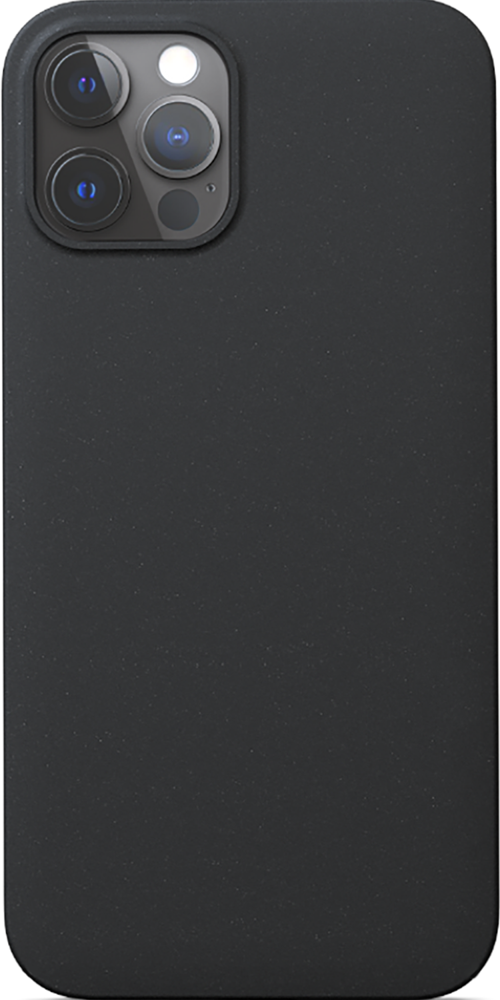

IZGIN Collection
ܟܘܢܫܐ

Design your phone case!
Phone brand
Select your phone brand
Apple – iPhone
Samsung
Phone model
Select your phone model
Motive
Select your motive
Aramean flag: horiz.
Aramean flag: horiz. with "SURYOYO"
Aramean flag: horiz. with "SURYOYO" in Syriac
Aramean flag: horiz. with "SURYAYA"
Aramean flag: horiz. with "ARAMEAN"
Aramean flag: horiz. with "ARAMEAN" in Syriac
Aramean flag: horiz. with "SYRIAC"
Aramean flag: vertical
--
Assyrian flag
--
Chaldean flag (color)
Chaldean flag (color) with "SURYOYO"
Chaldean flag (color) with "SURYOYO" in Syriac
Chaldean flag (color) with "SURYAYA"
Chaldean flag (color) with "CHALDEAN"
Chaldean flag (color) with "CHALDEAN" in Syriac
––––
Own motive